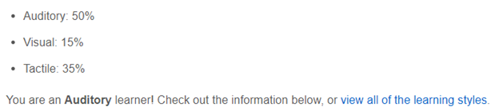

BLOCK MARKET
COSC1078 - Intro to IT Assignment 2
Team Profiles
About Us
Bo Kim Tran (S3954173)

I was born in Australia but have a half-Chinese and half-Vietnamese ethnicity. In 2019, I undertook a traineeship with Apprenticeship Support Australia. Since then, I have been working as a Client Service Officer providing crucial support to
businesses and apprentices especially during COVID and being responsible for administering government subsidies to clients. Some of my hobbies include experimenting with programming languages and playing games like Elden Ring. I especially
love going on walks with my pet dog Vilo (see below for maximum adorableness!)
I have a fair amount of IT experience in terms of what I have learnt or have been exposed to. I have dabbled with Python, Raspberry Pis, building computers, configuring networks, playing VR games and have been continuously exploring the
different options available in the IT industry.
At work, I occasionally become the de facto “IT guy” when the IT department is not available. My current number one interest in IT has been cybersecurity and ethical hacking. It started with prospects of high pay and being the ‘Hacker Man.’
However, further research into this industry gave me motivation to learn vital skills and knowledge to protect myself, my family, and others from the constant threats we face online. Also having legally immunity (when granted by the client)
to break into people’s things sounds like fun.

Bo's Personality Tests


My ‘16 Personalities’ test summarised me as a Logistician. This type of personality is known to be reliable they can stay focused and logical even during high intense situations. My learning style test showed I was primarily a kinesthetic
learner meaning I prefer learning new concepts by experiencing and experimenting with them without reading up on these concepts. Finally, in the ‘Big Five’ test, it showed I am a self-driven individual who focuses on completing his duties
without compromising his morals and assume a leadership role for group work.
A key point I understood from my test outcomes which may be useful to my team, is that I would assume the leadership role and duties in the team. Furthermore, my potential effectiveness as a leader is enhanced by my capability to manage
stressful situations and remained focused on the task at hand. This means I can effectively manage and organise the team to complete tasks on schedule, delegate duties, and ensure members are contributing. This thereby can reduce panic and
stress from disorganisation, having too much of a workload, or last-minute assignment rushes. This will also provide opportunities for our work to be reviewed and improved before submission.
Hayden McKenzie(S3897476)
INSERT HAYDEN'S EXTENDED PARAGRAH HERE
Hayden's Personality Tests


INSERT DATA OF HAYDEN'S TEST HERE
Daniel Gell(S3944942)

Hello, I am Daniel Gell, a member of the Block Market team, my student number is s3944942, and I’ve just moved to Melbourne this year (2022) for university, previously residing in the Gippsland town of Rosedale. My main hobby is music, I’ve
been playing guitar for nearly a decade, and have picked up various other instruments throughout the years. I am also an avid collector of music, with a collection of CDs, vinyl records, and cassette tapes amassing about 350 albums in total. My
interest in IT mostly stemmed from my year 12 IT teacher, Mr Donald Watson, he was very informative in how he taught and it gave me a love of IT that I still have till this day. I have little to no actual practical experience in IT however,
aside from a few data entry jobs I did for my mother’s bookkeeping company.
Daniel's Personality Tests


Myers-Briggs personality type: ENTP-T
Apparently I’m a debater, meaning I should be good in a team for
challenging other people’s ideas if I don’t think they would work,
allowing me to be a useful tool in our team’s arsenal by not allowing
other people’s ideas to go unchallenged, leading us to a higher
standard of work.
Learning type: Auditory/Tactile Learner
I learn best by doing things myself, which allows me to experiment
with trial and error to get the best results in any new skills that we
are taking on for our task. For example HTML, I just started making
my assignment 1 website with no prior experience and just learned it
all as I went, rather than watching a video and seeing all the
possibilities of HTML.
Creativity Test: 66.43% creative
This means that I am above average creatively, so I should have
more of a hand in the creative side of things, such as the website
design. And in our groups having someone who is less creative and
sees things more in black and white could ground me a bit to ensure
my ideas aren’t too far-fetched out and out there.
Russell Saw (S3935418)
Greetings! My name is Russell Saw and I am currently a student studying a Bachelor of IT in RMIT. I am Malaysian-Chinese by decent but have spent most of my childhood growing up in Melbourne (migrated at the end of 04) – and thus have adopted
a strong Australian culture – with some Asian roots. While almost exclusively speaking English with friends and family, I can understand slight amounts of Cantonese and Chinese – something I’d love to expand by understanding on. My past
education consists of a finished VCE (Highvale Secondary), 4 years of undergrad experience (Design at melbuni / IT at monash) and now finally finishing a Bachelor of IT at RMIT.
If not seen at my desk job as a junior front-end developer or studying for my degree, you can catch me practising guitar or playing badminton. Videogames have, and always been, a huge part of my life. Sinking ungodly hours into gradually
increasing an otherwise ineffectual number that supposedly quantifies your overall skill and competency - dota2 anyone?
From an early age, IT has always been a major component of my life. Everything from playing video game consoles, the exchange of information through social medias, to my ever-growing curiosity of AI have shaped me to become the individual I
am. My early childhood affinity with computer games had led me to become inevitably attached to PC’s. As you grow up with constantly updated hardware – and ever-increasing capabilities, your curiosity of what is possible, and what can be
created with these machines stands as a driving factor for my pursuit in a career in IT. Whether these limits are explored through means as a software developer, security architect or even a path in data analytics, is yet to be realised. My
hopes in completing my course in RMIT, is that I will learn in which of these fields my passion in IT lies. I currently have hands-on experience with IT, recently starting my job as a junior web developer, working within a dev team
collaboratively to code the front-end of an e-commerce website to be used commercially.
My own skills and qualifications are somewhat related and begin to explore what is required for this ideal job. I am currently finishing my Bachelor of IT as my tertiary education. In terms of coding ability, I understand the fundamental
principles of how some coding languages work, including HTML, CSS, JS and TS. I have had real-world experience applying these languages in developing websites. I have also had experience in completing courses in mobile app development (Android
studio) which include development in the front and back-end (storing data using MongoDB SQL).
In terms of field experience, there is limited and junior experience as a developer, using libraries such as angular and RxJS to develop. As I work in the front-end, I am always considering the UX and using a user-centred approach to my
designs. I have had prior tertiary experience in a Bachelor of Design, drawing upon design elements and principles learnt in my time learning architecture – which are all transferable skills which can be applied to digital UI design.
Personally, I have always had an eye for design, constantly finding the imperfections in current everyday applications and services – thinking about the “what ifs?” and the reimagining in my own style.
Russell's Personality Tests
INSERT DATA OF RUSSELL'S TEST HERE
Van Pham (S3788106)

My name is Van Pham, student number s3788106, email of s3788106@student.rmit.edu.au and studying in Bachelor of Information Technology. I was previously enrolled in Computer Science but opted to change courses. The reasons being: Enrolling in
a program that is more suited towards my capabilities and freeing up time to pursue other professional interests (being data analytics and data science) as well as leisure.
Born in Australia with a Vietnamese background, I can speak English, Vietnamese and in the recent years, have picked up Japanese. A fact that one might find interesting about me is that I’m an avid gamer, especially the genres of First-Person
Shooters and Role-Playing Games. My favourite titles are “Counter-Strike Global Offensive” and “Skyrim”.
Before starting my studies at RMIT, whenever the term “IT” came up in conversation, I would always think of Artificial Intelligent Systems, Machine Learning and an Interconnected world using Technology. Those assumptions were heavily
influenced by Japanese films such as “Ghost in the shell” and “Time of Eve” as well as games like “Deus Ex”. The conceptualisation of what a future society that is intertwined with technology has fascinated me ever since enjoying these medias a
few years back. Rather than just watching by the sideline, pursuing a career in IT, where I could create these technologies seemed much more appealing to me, hence my enrolment at RMIT.
After having studied for a couple of years with exposure to software development using Java, Databases and many other disciplines, my interest (much the same as before studying at RMIT) largely remains the same in Artificial Intelligence,
Machine Learning and Data Analytics. More specifically, I would someday like to create a self-thinking, intelligent system. Examples of developments in Artificial Intelligence that has piqued my interest in recent years includes Tesla’s
self-driving cars, the robot Sophia and OpenAI’s Dota 2 AI.
Van's Personality Tests


My test results may be helpful to my team as it provides an indication of the points in which may cause issues such as lack of communication as a trait from being introverted. Additionally, the Big 5 Personality Test described me as being 50%
conscientious which has implications regarding motivation and discipline. This may cause issues when it comes to deliverables. These points provide an opportunity to improve and manage said flaws.